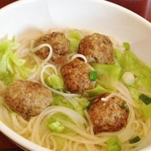
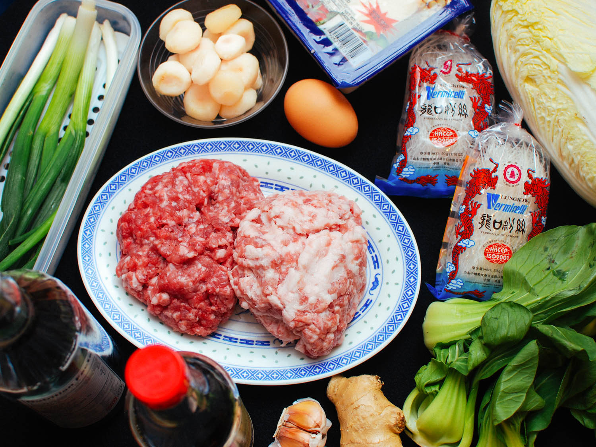
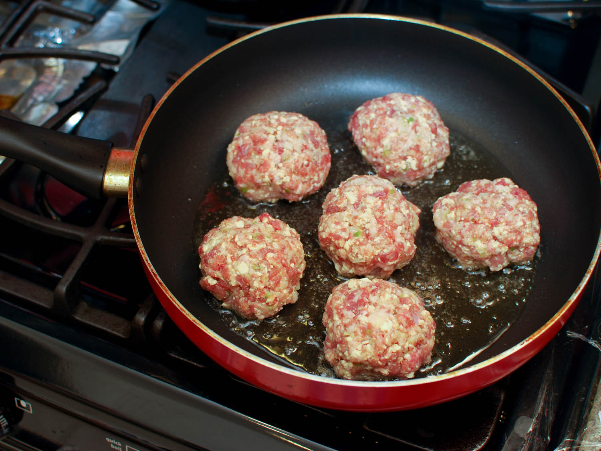
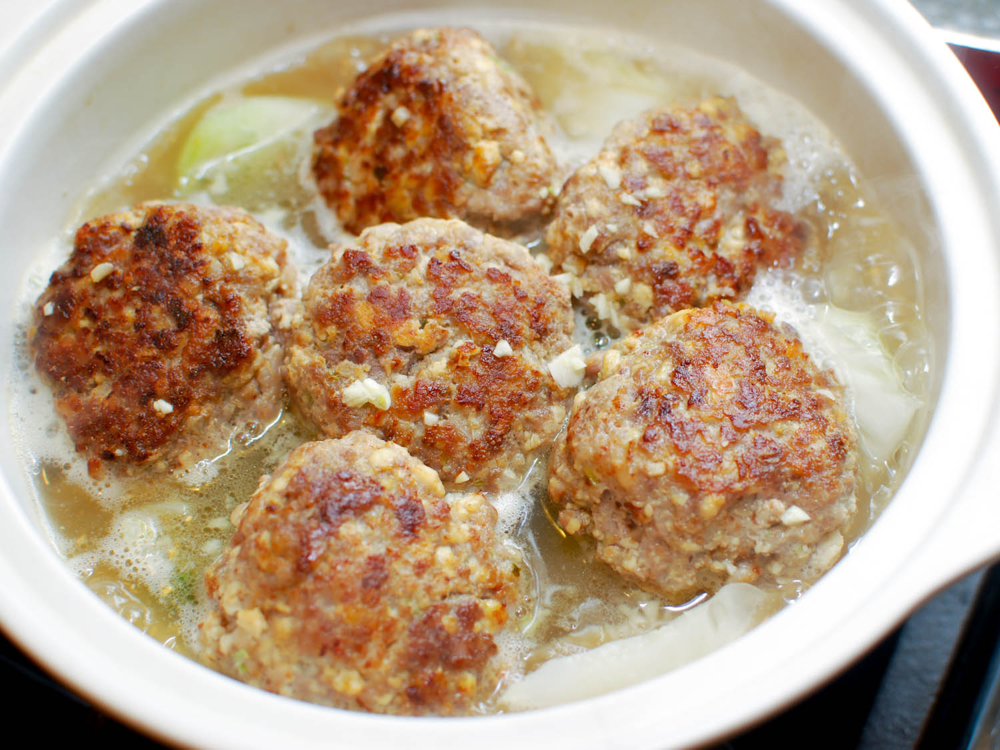

Chinese Lion's Head Food

INGREDIENTS

- 1 pound ground pork
- 1 egg
- 1 tablespoon cornstarch
- 2 teaspoons sesame oil
- 1 tablespoon minced fresh ginger root
- 1/4 teaspoon monosodium glutamate(MSG)(optional)
- 1 teaspoon salt
- 2 green onions, chopped and divided
- 1 tablespoon vegetable oil
- 1 head napa cabbage, cored and cut into chunks
- 2 cups low-sodium chicken broth
- 2 cups water, or as needed
- 1 tablespoon soy sauce
- 2 teaspoons sesame oil
PREPARATION
- Mix the ground pork egg, flour, 2 teaspoons of sesame oil, ginger, monosodium glutamate, salt and half of the
chopped green onions together in a bowl.
- Use your hands to mix until the ingredients are evenly distributed. Set aside.
COOKING METHOD
- Heat the vegetable oil in a wok or large skillet over high heat. When the oil is hot,fry the napa cabbage,
stirring constantly, until cabbage begins to wilt, 2 to 3 minutes. Pour in the chicken broth, water, and
soy sauce. Bring to a boil,then lower the heat to medium.

- Use a spoon to form the meat mixture into 1 inch balls. Drop them into the boiling soup.When the last ball has
been added, cover with a lid and simmer for 10 minutes. Taste, and adjust salt before serving. Garnish with remaining green onions and a drizzle of sesame oil.
